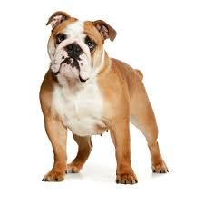
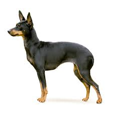
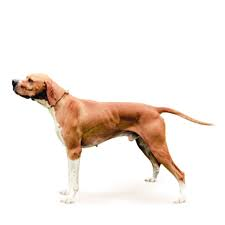

| породы собак |
описание |
страна обитания |
Английский бульдог

|
Английский бульдог одна из старейших пород собак |
Францыя,Бельгия,Англия |
Акита
|
акита-ину, согласно описанию породы, крупная собака крепкого сложения,
мощная, хорошо сбалансированная |
Японии,Америка |
Английский той-терьер

|
Само название породы говорит о том, что английский той-терьер соединяет в
себе характеристики охотника и маленькой комнатной собаки. |
Англия |
Белая швейцарская овчарка

|
Белые швейцарские овчарки по всем своим характеристикам являются
пастушьими собаками. |
Швейцария |
Английский пойнтер

|
Пойнтер — активная, выносливая и быстрая легавая, обладающая добрым
нравом и известная своей уравновешенностью. |
Англия |